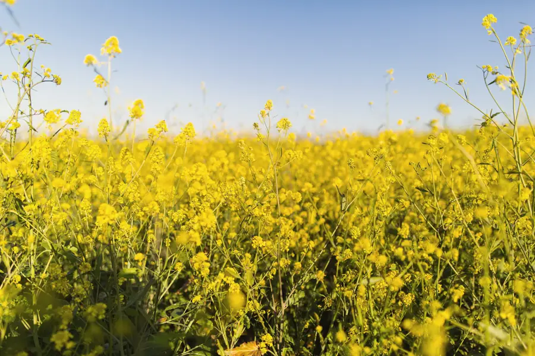
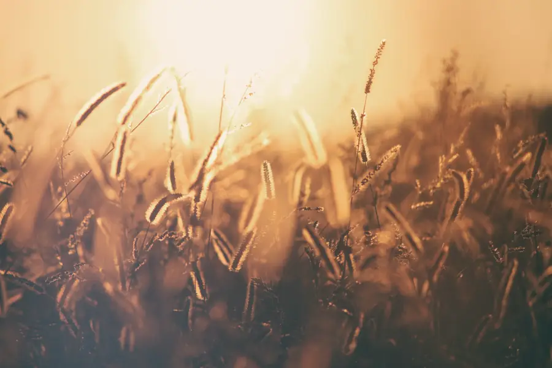
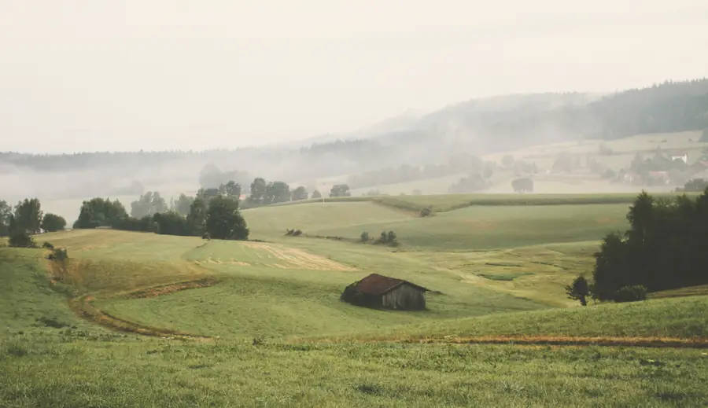
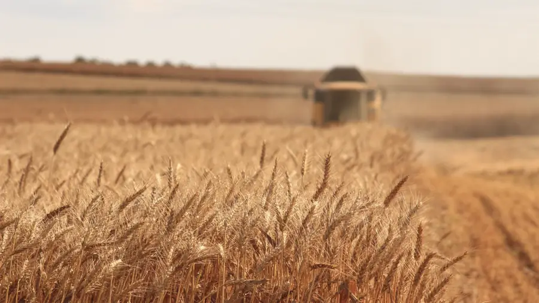
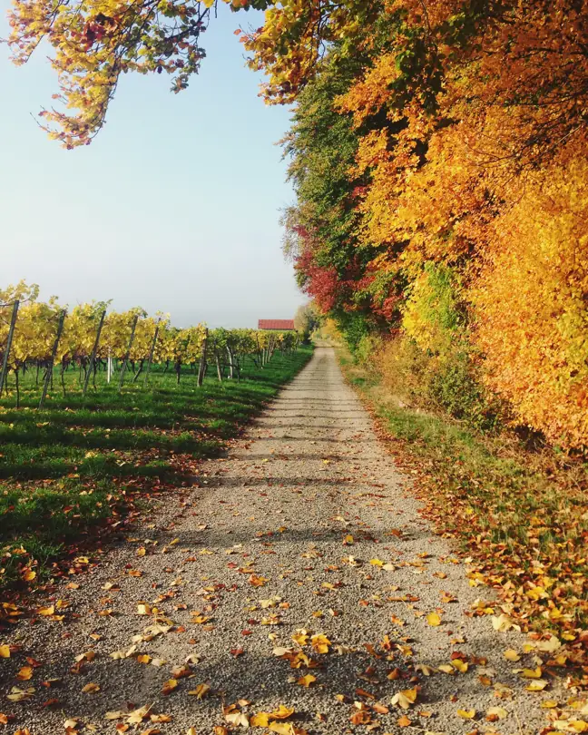
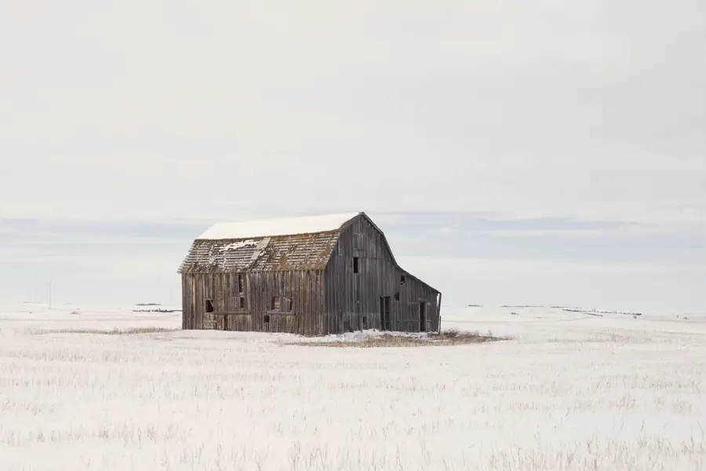
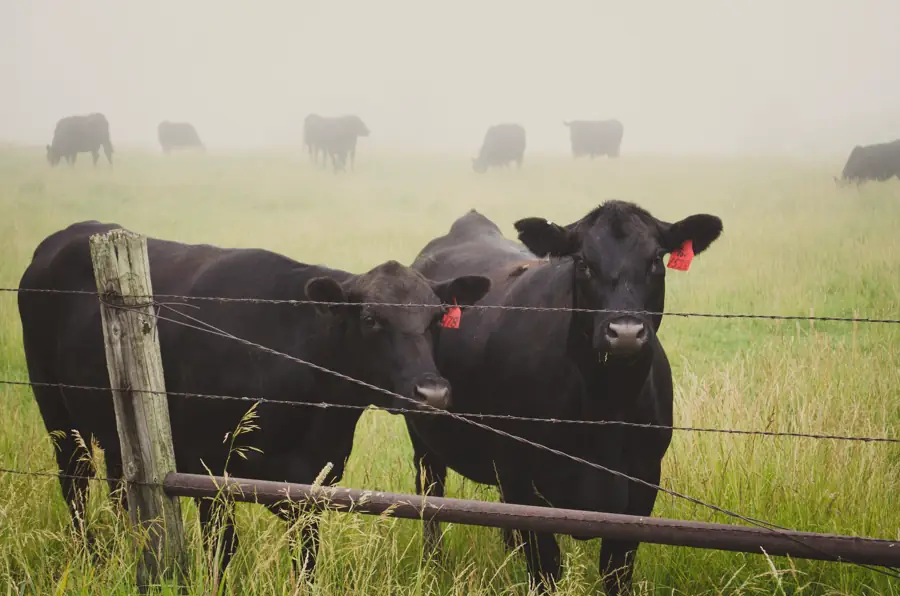
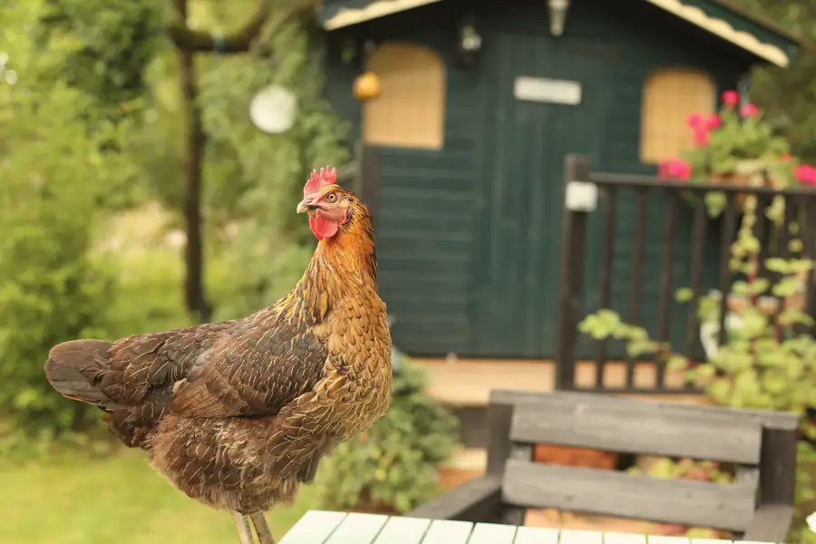
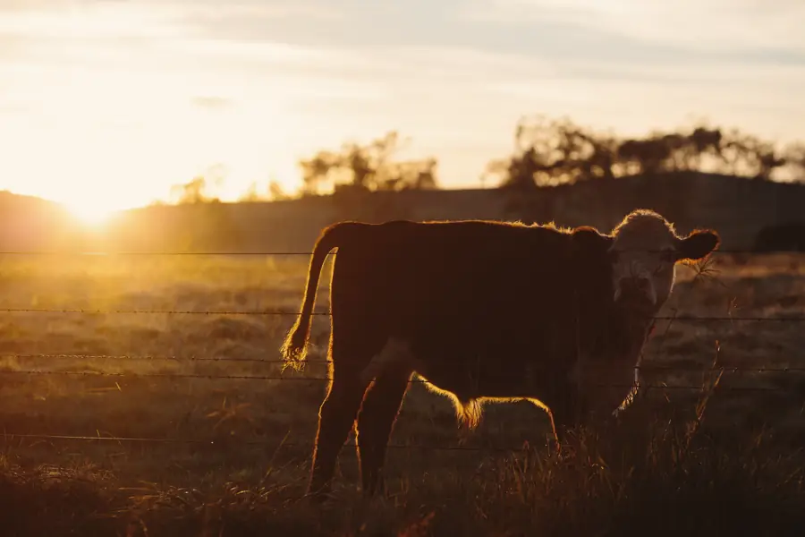

März — Mai
Frühling
Der Raps färbt die Hügel gelb. Die Bienen unserer 60 Völker erledigen den Rest.

Uckermark, Brandenburg · seit 1847
Fünf Generationen, 920 Hektar, ein Versprechen: vom Boden bis zum Tisch — ohne Umwege.
01 — Herkunft
1847 pflanzte Johann Lindenau eine einzige Linde in den Hof. Sie steht bis heute. Alles, was wir anbauen, melken und backen, folgt derselben Idee: sich Zeit nehmen, mehr zurückgeben als man nimmt, und das Land das Tempo bestimmen lassen.

02 — Vom Samen zur Ähre
03 — Felder & Ernte

Der Raps färbt die Hügel gelb. Die Bienen unserer 60 Völker erledigen den Rest.

Alter Landweizen, geerntet in der Dämmerung, wenn das Korn am trockensten ist.

Äpfel, Kartoffeln, Kürbisse. Die Scheune riecht wochenlang nach Most.

Der Boden ruht unter Klee. Wir reparieren, planen und backen.
04 — Die Herde
Unser Fleckvieh weidet von April bis November. Nur Heumilch — keine Silage, keine Eile.

Ihre Ställe ziehen jede Woche weiter durch die Streuobstwiese — das Gras ist immer frisch.

Unsere Meierei macht daraus Butter, Quark und einen 14 Monate gereiften Bergkäse.

05 — Nachhaltigkeit
zertifiziert biologische Fläche
eigener Solar- & Biogasstrom
Hecken gepflanzt seit 1991
synthetische Pestizide. Nie.
06 — Hofladen
07 — Besuch
Hofführungen jeden Samstag, Melken im Morgengrauen, Erntefest im September. Sagen Sie uns wann — wir setzen den Kessel auf.